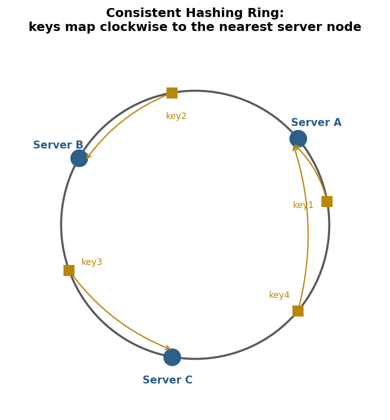
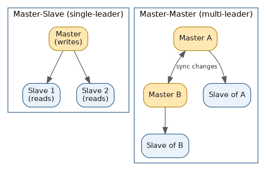
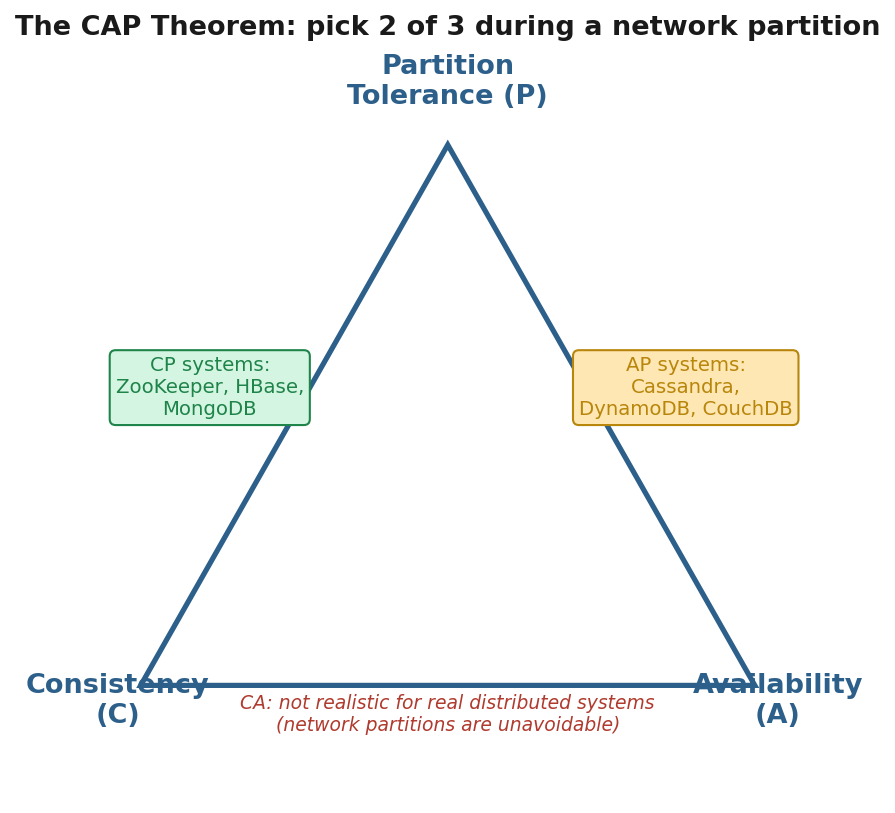
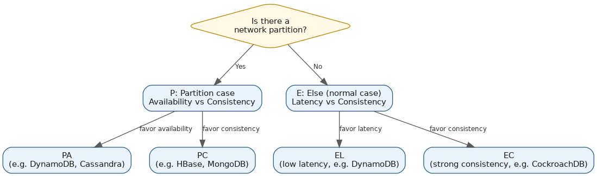

Data Partitioning, Replication & CAP
Table of Contents
- Overview
- Introduction to Data Partitioning
- Partitioning Methods
- Data Sharding Techniques
- Benefits of Data Partitioning
- Common Problems Associated with Data Partitioning
- What is Redundancy?
- What is Replication?
- Replication Methods
- Data Backup vs. Disaster Recovery
- Introduction to CAP Theorem
- Components of CAP Theorem
- Trade-offs in CAP Theorem
- Examples of CAP Theorem in Practice
- Beyond CAP Theorem (PACELC)
- System Design Trade-offs in Interviews
- Common Interview Questions
- Key Takeaways
Overview
Once a dataset outgrows a single machine, three interconnected ideas take over the conversation: partitioning (splitting data across many machines so no single one has to hold or serve all of it), replication (keeping multiple live copies of that data so no single machine is a point of failure), and the CAP/PACELC theorems (the formal vocabulary for the trade-offs that appear the moment data lives on more than one, possibly disconnected, machine). Partitioning and replication are usually combined in the same system — a dataset is sharded across many servers, and each shard is itself replicated for durability and availability — and CAP/PACELC describe exactly what such a system has to give up, and when, in order to keep working.
This page walks through data partitioning (why and how to split data, and the problems that introduces), redundancy and replication (keeping extra and synchronized copies, and how to back them up or fail over), and finally the CAP and PACELC theorems, which formalize the consistency/availability/latency trade-offs every distributed data store makes. The site's System Design — Building Units section also covers sharding, replication, and rate limiting together as reusable building blocks (see ../system-design-building-units/sharding-replication-rate-limiting.html); this page treats data partitioning, replication, and CAP/PACELC as a complete topic in their own right.
Introduction to Data Partitioning
Data partitioning is the practice of splitting a large dataset into smaller pieces — partitions — and spreading them across different tables, disks, or servers. The problem it solves is straightforward: a single database server has finite disk, memory, and CPU, and once data or traffic outgrows that ceiling, the only way forward is to split the data rather than keep cramming it onto one machine. Almost every large-scale system — a social network's user table, a ride-hailing app's trip history, a bank's transaction ledger — is partitioned behind the scenes, even though it looks like "one database" from the outside.
There are two broad flavors. Vertical partitioning splits a table by columns — for example, keeping frequently accessed columns like user_id, name, and email in one partition, and rarely accessed or large columns like profile_bio or activity logs in another — useful when different parts of a row are accessed at very different rates. Horizontal partitioning (far more commonly discussed in system design, and usually called "sharding" once it spans separate servers) splits a table by rows — for example, users 1–1,000,000 on one server and 1,000,001–2,000,000 on another. Both approaches keep the same schema while reducing how much data any single machine or query has to touch. In practice the two are often combined: split vertically by business domain first (separate databases for users, orders, analytics), then horizontally shard the largest tables within a domain once a single server can't keep up. Partitioning is one of the foundational tools for building systems that scale, which is why nearly every "design X at scale" interview question eventually needs an answer for what happens when the data no longer fits on one machine.
Partitioning Methods
Once you decide to split data, you need a rule for which partition each row belongs to — the partitioning method, applied to a chosen partition (or shard) key. Getting this right determines how evenly load spreads and how easy data is to find later:
- Range partitioning — data is split by ranges of the partition key (orders from January in partition 1, February in partition 2; user IDs 1–999 in partition A, 1000–1999 in partition B). Intuitive, and makes range queries ("all orders from last month") fast since they hit only one or a few partitions — but it can create "hot" partitions if new traffic piles onto the newest range while older ones sit idle.
- Hash partitioning — a hash function applied to the partition key decides the partition (e.g.
hash(user_id) % number_of_partitions). Spreads data evenly and avoids hotspots, but makes range queries expensive since logically neighboring records end up scattered randomly across partitions. - List partitioning — rows are assigned to a partition based on a predefined list of discrete values, such as country codes (all
country = 'US'rows in one partition,'IN'in another). Works well when data naturally falls into a small number of known categories, and is often used for compliance reasons — keeping EU user data physically in EU data centers, for example. - Composite (hybrid) partitioning — two methods combined, such as list-partitioning by country first and then hash-partitioning each country's data further, common when a single method alone can't deliver both even distribution and query efficiency.
Choosing a method is really a trade-off between even data distribution (favoring hashing) and efficient range queries or logical grouping (favoring range or list partitioning) — a strong interview answer explains that trade-off rather than defaulting to one method.
Data Sharding Techniques
Sharding is horizontal partitioning applied at the database-server level: instead of one giant database, many smaller databases (shards) each hold a subset of the rows, usually behind a routing layer that knows which shard owns which key. A simple approach is key-based (hash) sharding with a fixed modulo — shard_id = hash(key) % N. It's easy to implement but fragile: changing N (adding or removing a shard) reassigns almost every key to a different shard, forcing a massive, disruptive reshuffle of a live system.
Consistent hashing exists to solve exactly that problem, and it's one of the most frequently asked concepts in system design interviews. Both the servers (shards) and the data keys are mapped onto a conceptual ring using the same hash function, and each key is owned by the first server found walking clockwise from the key's position. Adding or removing a server only moves the keys that fall between that server and its neighbor — the rest of the ring is untouched, avoiding a full reshuffle. To prevent uneven load (a server could otherwise land on an unlucky large stretch of the ring), real systems assign many "virtual nodes" per physical server, smoothing out the distribution. Consistent hashing underpins Amazon DynamoDB, Apache Cassandra (via its Murmur3 partitioner and virtual nodes), distributed caches like Memcached and Redis Cluster, and various CDNs and load balancers.
Other real-world sharding techniques worth knowing: MongoDB supports range-based sharding (good for range queries, risks uneven chunks), hashed sharding (spreads writes evenly, hurts range queries), and zone sharding, which pins specific data ranges to specific shards or regions — useful for geographic locality or data-residency rules. Vitess, the sharding middleware built for MySQL (originally at YouTube, now used by Slack and GitHub among others), lets a normal MySQL database be sharded without rewriting the application, using range-based shards plus consistent-hashing concepts and "online resharding" to resize a cluster with minimal downtime. Cassandra partitions data automatically via consistent hashing on the partition key, so adding or removing nodes only moves a fraction of the ring's data.

Benefits of Data Partitioning
The most obvious benefit is scalability — once data is split across machines, more machines can keep being added as data or traffic grows, instead of being capped by the largest single server available; this is horizontal scaling, and it's the reason partitioning underlies nearly every large-scale system. Partitioning also improves performance: a query that only needs one partition's data scans a fraction of the total rather than a whole table, and queries against different partitions can run in parallel, increasing overall throughput.
It also improves manageability and availability — smaller partitions are easier to back up, restore, reindex, or migrate individually, and because data lives across independent machines, a single partition's server going down only affects that partition's data while the rest keeps serving. Old data can be archived or dropped a whole partition at a time rather than through expensive row-by-row deletes. Finally, partitioning enables cost efficiency at scale, since many smaller, commodity machines are generally cheaper than one enormous machine, and capacity can be added incrementally instead of over-provisioning up front.
Common Problems Associated with Data Partitioning
Partitioning solves scaling problems but introduces its own, which is why it's not something to reach for until it's actually needed:
- Hotspots (uneven load) — a poorly chosen partition key can leave some partitions handling far more traffic than others (e.g., partitioning by date means "today's" partition becomes a bottleneck while older ones sit idle). A high-cardinality, evenly-accessed key, or hash-based partitioning, helps avoid this.
- Cross-partition queries and joins — combining data that lives on different shards becomes slower and harder, since the database or application has to fan requests out to multiple shards and merge results itself. Denormalizing data across shards is a common workaround so common queries stay within one shard.
- Distributed transactions — maintaining ACID guarantees across a transaction touching multiple shards is hard, typically requiring protocols like two-phase commit that add coordination overhead and latency, or avoiding multi-shard transactions by design altogether.
- Rebalancing — as data grows unevenly or shards are added/removed, data has to be moved between partitions while the system stays live, keeping old and new copies in sync during migration without dropping requests. This is operationally one of the trickiest parts of running a sharded system, and naive modulo hashing makes it far worse.
- Operational complexity — a sharded system needs a routing layer that knows which shard owns which data, plus more complex monitoring and debugging, since a single "slow query" might now mean tracking down which of dozens of shards is slow.
What is Redundancy?
Redundancy means having extra, duplicate components — servers, disks, network links, even whole data centers — that aren't strictly needed for normal operation but exist purely as a safety net if the primary component fails. If one thing breaks, something else takes over so users don't experience an outage; a hot spare server sitting idle, or a load balancer with three servers when two would handle normal traffic, are both classic examples. Redundancy can exist at many levels: redundant power supplies and disks (RAID) inside one machine, redundant servers within a data center, redundant network paths, and redundant data centers in different regions so a regional outage doesn't take the whole system down. The key distinction from replication is that redundant components are often passive or standby — they exist for failover, not necessarily to share the everyday workload.
What is Replication?
Replication is the practice of keeping multiple, continuously synchronized copies of the same data (or service) across different servers, so more than one copy is actively usable at any time. Where redundancy is about "having a backup ready in case something fails," replication is about "keeping several live, up-to-date copies," which serves two purposes at once: it improves availability (if one replica goes down, others still have the data) and improves performance (read traffic spreads across multiple replicas instead of all hitting one server, and replicas placed near users reduce latency).
In database systems, replication typically means one or more copies automatically receive every change made to the primary copy, as it happens or shortly after. It's foundational in nearly every production database — MySQL, PostgreSQL, MongoDB, and Cassandra all support it natively — because an un-replicated database is a single point of failure: if that one server dies, the data is gone or unreachable until restored. Replication and redundancy are often used together, since the replicas themselves serve as the "extra copies" providing failover if the primary fails, which is why the two concepts are so closely related and usually discussed together.
Replication Methods
Replication strategies differ along several axes, and understanding them is essential for system design discussions:
- Single-leader (master-slave) replication — one node (the master/primary/leader) accepts all writes, while one or more slave (replica/follower) nodes receive a continuous stream of changes and serve read-only traffic. The most common setup in MySQL and PostgreSQL, simple to reason about since writes can only conflict in one place — but the master is a write bottleneck and a single point of failure until a replica is promoted.
- Multi-leader (master-master) replication — more than one node accepts writes simultaneously, propagating changes to each other. Improves write availability and can help geographically (each region writes to its local master), but introduces conflict resolution: what happens when the same record is updated differently on two masters at once? Systems need rules like "last write wins" or custom merge logic.
- Synchronous replication — the primary waits for one or more replicas to confirm a write before telling the client it succeeded. Guarantees replicas stay current and reduces data-loss risk if the primary fails, but adds latency to every write.
- Asynchronous replication — the primary commits and responds to the client immediately, without waiting for replicas to catch up. The default in most systems (standard MySQL/PostgreSQL streaming replication) because it keeps write latency low, but risks losing a change if the primary crashes before it reaches the replicas.
- Semi-synchronous replication — a middle ground where the primary waits for acknowledgment from at least one replica (not all), balancing durability against latency.
PostgreSQL illustrates the spectrum concretely: it supports physical (streaming) replication, shipping raw write-ahead log (WAL) records to standbys for an exact byte-for-byte copy, and logical replication, which replicates at the level of individual rows/tables and allows more flexible setups, like replicating only some tables or across different PostgreSQL versions.

Data Backup vs. Disaster Recovery
Backup and disaster recovery are related but distinct, and the difference is a favorite comparison question in system design and infrastructure interviews. A backup is simply a copy of data taken at some point in time and stored separately (often cheaper, slower, or off-site storage) so it can be restored if data is lost, corrupted, or deleted. Disaster recovery (DR) is the broader plan and set of systems for getting an entire service back up after a major failure — a data center outage, a natural disaster, a large-scale security incident — and it includes backups as one ingredient, but also covers failover infrastructure, standby regions, runbooks, and recovery procedures for the whole system, not just the data.
Two metrics anchor both: RPO (Recovery Point Objective) answers "how much data can we afford to lose?" (an RPO of one hour means backups/replication must be frequent enough that at most an hour of data could be lost), and RTO (Recovery Time Objective) answers "how long can we afford to be down?" (an RTO of 15 minutes means the whole system must be back online within 15 minutes of a failure). Backup strategy is mostly about hitting a target RPO; disaster recovery strategy is mostly about hitting a target RTO using those backups plus failover infrastructure.
| Data Backup | Disaster Recovery | |
|---|---|---|
| Focus | Copies of data, taken periodically | Full plan to restore the entire service after a major failure |
| Primary metric | RPO (how much data loss is acceptable) | RTO (how much downtime is acceptable) |
| Scope | Data only | Data, servers, networking, failover regions, procedures |
| Example | Nightly database snapshot stored in cloud storage | A whole secondary data center on standby, ready to take over traffic within minutes of a regional outage |
A mature system design needs both: regular, tested backups as a safety net against data loss or corruption, and a broader disaster recovery plan — often including standby regions, monitored failover, and regular DR drills — so that when something bigger than "we lost a row of data" happens, the whole system, not just the data, comes back online within an acceptable time.
Introduction to CAP Theorem
The CAP theorem is one of the most fundamental and most frequently tested ideas in distributed systems design. It states that any distributed data store can only guarantee two of three properties at the same time: Consistency, Availability, and Partition tolerance. Formulated as a conjecture by Eric Brewer in 2000 and later proven formally, it captures a real, unavoidable engineering trade-off rather than an arbitrary rule — you can't design around it, only choose which property to sacrifice, and only during specific conditions.
The theorem matters in practice because real networks are unreliable: cables get cut, switches fail, cloud regions lose connectivity, packets get dropped or delayed. Because network partitions are effectively guaranteed to happen eventually in any system spread across multiple machines, partition tolerance isn't an optional feature to skip — it's a fact of life. That leaves the real decision as being between consistency and availability specifically during the moments a partition is actually happening, which is why CAP discussions in interviews are less about abstractly picking "2 of 3" and more about explaining what your system does the moment the network breaks.
Components of CAP Theorem
Consistency (C) means every node returns the same, most-recent data for a given read, regardless of which node is asked — if you write a value and immediately read it back, even from a different node, you're guaranteed the latest value, not a stale one. This requires nodes to coordinate before responding, to avoid handing back outdated information. Availability (A) means every request to a working node receives a response — success or failure, but never a timeout or hang — as long as the node itself is up; note that availability in the CAP sense doesn't require the answer to be the latest or correct value, only that the system responds at all. Partition tolerance (P) means the system keeps operating even when network failures split it into groups of nodes that can't communicate — one subset might be entirely unreachable from another, yet the system as a whole is still expected to keep functioning in some form rather than shutting down.
The reason only two of three can be picked during a partition comes down to simple logic: imagine a partition splits a cluster into Group A and Group B, and a client writes new data to a node in Group A. Because of the partition, that write can't reach Group B. If a different client then reads from a node in Group B, the system has exactly two choices — refuse to answer or delay until the partition heals (sacrificing availability to protect consistency), or answer immediately with what it has, which is now stale compared to Group A (sacrificing consistency to protect availability). There's no third option giving both a correct and an immediate answer while the groups can't talk — that's the entire theorem in one scenario.

Trade-offs in CAP Theorem
Because partition tolerance is essentially mandatory for any real distributed system, the practical trade-off almost always comes down to consistency versus availability specifically during a partition:
- CP (Consistency + Partition tolerance) — when a partition happens, the system stays consistent by refusing requests (or serving errors/timeouts) on the side that can't be sure it has the latest data, rather than risk stale or conflicting information. The cost is reduced availability during the partition.
- AP (Availability + Partition tolerance) — when a partition happens, the system keeps responding to every request on both sides, even though different nodes may return different (possibly stale) versions of the data. The system typically becomes "eventually consistent," reconciling differences once the partition heals.
A closely related, very useful idea is the quorum, a technique many distributed databases use to fine-tune this trade-off rather than picking one extreme. In a quorum-based system, a write (or read) only counts as successful once a majority (or a configured minimum number) of replicas acknowledge it — e.g., "at least 2 of 3 replicas must confirm a write." Cassandra lets consistency level be configured per query: a QUORUM write combined with a QUORUM read guarantees strong consistency (since the replica sets involved are guaranteed to overlap), while consistency level ONE gives much lower latency and higher availability at the cost of a weaker guarantee. This "tunable consistency" is why real production systems rarely fall neatly into a pure CP or pure AP bucket — the honest answer to "is this system CP or AP?" is often "it depends on the consistency level and quorum settings configured for that operation."
Examples of CAP Theorem in Practice
Concrete, well-known systems make CAP much easier to reason about than the abstract theorem alone:
- CP systems (favor consistency over availability during a partition) — Apache ZooKeeper, used for distributed coordination (leader election, configuration) in systems like Kafka and HBase, deliberately chooses consistency over availability, making an affected node unavailable rather than risking corrupted coordination state. HBase routes each write to exactly one RegionServer responsible for a key range; if unreachable, the write simply fails rather than being served incorrectly elsewhere. MongoDB, with its default settings (single primary, configurable write concern requiring majority acknowledgment), also behaves as a CP system.
- AP systems (favor availability over consistency during a partition) — Apache Cassandra and Amazon DynamoDB are the textbook examples: every replica keeps accepting reads and writes even during a partition, reconciling differences afterward via mechanisms like read repair and version vectors. CouchDB is another classic AP example, built around offline-first, eventually-consistent replication.
- A tunable example — DynamoDB offers both eventually consistent reads (fast, cheap, AP-flavored) and strongly consistent reads (slower, more expensive, CP-flavored) on the same table, letting the application choose per request — a good illustration that CAP classification is often a per-operation configuration choice, not a fixed label on the whole database.
- Google Spanner, Google's globally distributed relational database, is technically a CP system — during a genuine partition or quorum loss it will pause or fail writes rather than risk inconsistency. What makes it notable is that it achieves extremely high availability in practice despite being CP, thanks to its TrueTime infrastructure (GPS and atomic clocks in every data center giving nodes a tightly bounded, synchronized notion of time), which orders global transactions with minimal coordination overhead and makes true partitions rare and short-lived. Spanner is sometimes informally called "effectively CA," but that doesn't mean it defies CAP — partitions are just so infrequent in its architecture that the trade-off rarely becomes visible to users.
Beyond CAP Theorem (PACELC)
CAP theorem only describes what happens during a network partition — but partitions are (hopefully) rare, while a distributed system makes trade-offs constantly, even when the network is perfectly healthy. This gap is exactly what the PACELC theorem, introduced by Daniel Abadi in 2012, addresses, and it's worth raising in interviews because it signals deeper understanding than reciting CAP alone.
PACELC stands for: if there is a Partition, how does the system trade off Availability and Consistency; Else (no partition), how does it trade off Latency and Consistency. The first half (PAC) is just the CAP theorem's partition scenario; the second half (ELC) is the new insight — even with no partition and everything healthy, a distributed system still has to decide, on every operation, between responding quickly (low latency) or coordinating with other replicas first to guarantee everyone sees the same value (strong consistency). Coordinating with remote replicas takes real time, so there's an inescapable tension between speed and strong consistency even on the happy path, not just during failures. This gives every system a four-letter classification instead of two:
- PA/EL (e.g., DynamoDB, Cassandra) — during a partition, favor availability over consistency; even without one, favor low latency over strong consistency. Built for speed and always-on behavior, accepting eventual consistency as the price.
- PC/EC (e.g., traditional relational databases run with synchronous replication, or systems like CockroachDB) — during a partition, favor consistency over availability; even without one, favor consistency over low latency, coordinating on every operation.
- Mixed combinations exist too — a system might favor consistency during a partition (PC) but favor low latency in normal operation (EL), since the engineering cost of coordinating during a rare partition differs from the cost of coordinating on every single normal request.
A concrete way to feel the trade-off: an e-commerce inventory system might accept slightly relaxed consistency in normal operation (a stock count off by one for a fraction of a second) in exchange for very fast checkout responses — an "EL" choice — but the moment there's real doubt about overselling the last item, it may fall back to stricter coordination. Financial trading systems similarly want microsecond responses under normal conditions (EL) but will deliberately halt trading rather than risk executing at an inconsistent price during a partition (PC) — showing a single real system can make different choices for the partition case versus the normal-operation case.

System Design Trade-offs in Interviews
CAP and PACELC come up constantly in system design interviews because they force a candidate to reason explicitly about trade-offs rather than reciting features. A weak answer says "I'll use a NoSQL database because it's more scalable." A strong answer identifies which specific guarantee each part of the system actually needs and justifies the choice against real alternatives — for example: "For the payments ledger, I need strong consistency, so I'll accept higher write latency and potential unavailability during a partition — a CP-style setup with synchronous replication and quorum writes makes sense. For the 'like' counter or activity feed, users won't notice if the count is off by a few for a moment, so I'll favor an AP-style, eventually consistent store that stays available and fast even under partition or heavy load."
Interviewers are also listening for how deep the understanding goes beyond the label "CP" or "AP" — questions like "AP with what quorum settings?", "what's the read-repair strategy?", or "what does this system do when there's no partition, only high latency between regions?" push toward the PACELC-style nuance above. Naming concrete real systems and their positioning (Cassandra/DynamoDB as AP, ZooKeeper/HBase as CP, MongoDB/Spanner as CP with configurable trade-offs) signals the concept is grounded in practical experience, not just theory. The goal isn't to defend "CP is better" or "AP is better" in the abstract — it's to show that different parts of the same large system can, and usually should, make different consistency/availability/latency trade-offs depending on what that specific piece of data actually needs.
Common Interview Questions
hash(key) % N), changing N — adding or removing a single shard — reassigns almost every key to a different shard, forcing a massive, disruptive reshuffle of nearly all the data. Consistent hashing maps both servers and keys onto a ring, so adding or removing a server only moves the keys between that server and its neighbor, leaving the rest of the ring untouched. Virtual nodes are added per physical server to smooth out uneven load. This is why systems like DynamoDB, Cassandra, and Redis Cluster all rely on consistent hashing rather than naive modulo hashing.